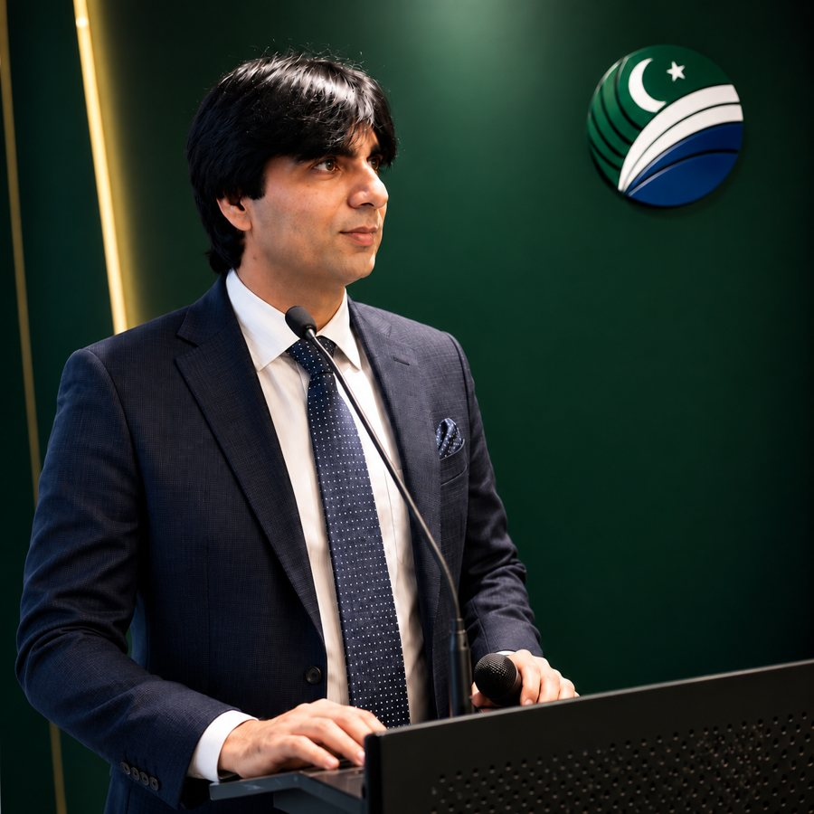

I lead technology companies and design cloud infrastructure for enterprises worldwide. A decade of hands-on work as an AWS, Azure and OCI architect, from landing zones and migrations to hybrid networks and disaster recovery.
Explore my venturesDownload Profile
Executive leadership for business, deep cloud engineering for technical teams.
Leadership
Founder of MRX Digital Coin and MRX Digital Technologies, Global CEO of BrightWay Technologies, and Senior Vice President at two national and international organizations.
See venturesEngineering
Architecture, migration, hybrid connectivity, security, disaster recovery and automation across Azure, AWS and OCI.
See experienceReceived in recognition of national contribution and achievement.
Landing zones, multi-account and multi-cloud designs on Azure, AWS and OCI.
Assessment, dependency mapping, planning and cut-over of servers and workloads into Azure, AWS and OCI.
ExpressRoute, Direct Connect, FastConnect and site-to-site VPN linking on-premises and cloud.
Sangfor HCI clusters, SCP, aStor storage and VDI for enterprise workloads.
Entra ID, IAM, RBAC, Azure Policy, AWS Organizations and Control Tower.
Firewalls, WAF, NSGs and security groups, MFA, Conditional Access and hardening.
Site Recovery, multi-AZ and multi-region designs, replication and tested failover.
Capacity planning, right-sizing and cost management with Cost Explorer and Trusted Advisor.
CloudWatch, Azure Monitor, Log Analytics, Grafana and New Relic.
Terraform, CloudFormation, ARM, PowerShell, Python, Bash and CI/CD pipelines.
Docker, OpenShift, WebLogic, WebSphere, JBoss and Tomcat operations.
Strategy, vendor coordination and delivery across companies and teams.
On-premises to cloud, planned end to end so cut-over is uneventful.
Led on-premises to cloud programs covering assessment, architecture, execution, validation and post-migration support.
Governance, hybrid frameworks and ExpressRoute and VPN connectivity for large enterprise environments.
Organizations and Control Tower governance with secure networking, IAM and high availability.